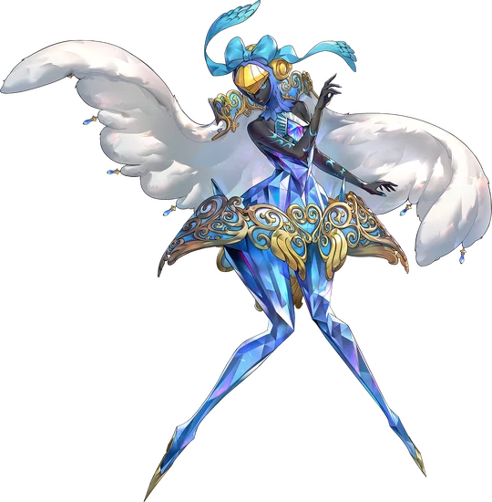

Halfway × The Well, pass 2. Solstice's pink and black and its font, louder and creepier. The clock is the signature: it ticks on the title (touch it and the night takes over), sits in the HUD, and wipes the screen when time passes. The depth gauge lives in the dungeon only.
↑↓ move · Enter pick, on whichever screen is in the middle of the window. Every screen replays its entrance when you scroll back to it.
A Title the clock ticks · move, touch or press a key and the night takes the whole screen; rest and the day comes back
Turn your phone sideways, or scroll the screen →
Press EnterPersona 3: Equinox · fan game · mockup
Rest a few seconds to see the day come back
B Field menu Solstice's font, louder · paper bar fitted under the word · the echo twitches · grain, scanline, glitching ghost word
Turn your phone sideways, or scroll the screen →
Party
4/21WedEveningMoon · waxing ¾
Who walks into the Well with you tonight.
¥48,200 · ✦ 12 Plumes
C Dialogue Solstice's sizes and placement · the name tag swings in like a hand · a tick walks the top edge · words sink in
Turn your phone sideways, or scroll the screen →
Evening
Yukari
D Battle in the Well ↑↓ turns the command dial · HP / SP as rings · the depth gauge, dungeon only
Turn your phone sideways, or scroll the screen →

SolarYour move
Cendrillon Lv 38
Slash?
Strike?
Pierce?
FireWeak
IceNull
Elec?
Wind?
Light?
Dark?
412/460
↑↓ turn the dial · Enter
The Well
Block 1Block 2Block 3· · ·
B37F−370 m
Next stairs somewhere below
E Time passes the hand drags the next part of the day in · the Dark Hour stops the clock
Turn your phone sideways, or scroll the screen →
4/21Wednesday
Early Morning
Morning
After school
Evening
Dark Hour
Pass 2, from your notes: one palette (Solstice's pink and black, no red), Solstice's font, the title clock ticks, and touching or moving brings the night over everything until you rest. The selection is louder and creepier and sits right under the word. Dialogue is back to Solstice's sizes and placement, with Equinox motion on top.